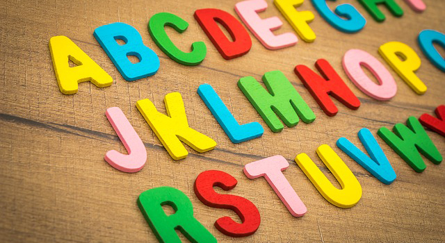

語言學小知識#1 語言能力是天生的嗎？
英文分屬於印歐語系，跟我們日常生活中拿來溝通，分屬於漢藏語系的中文有很大的不同。不論是語序、文法結構、以及想要強調的核心概念都有分別！在學習語言的過程中，若是還能順道獲取一些語言學知識，今後不只是在學習英文，對於其他歐語甚至是不同語系的語言，在了解其核心概念上都能夠事半功倍！
今天的語言學小知識單元，讓我們來聚焦在小孩子學習語言的過程。小孩子從什麼時候開始學習語言的？他們在學習語言時是否有一定的先後順序？都將會涵蓋在介紹中。我們首先必須提出一個問題，那就是「語言到底是不是天生的？」小孩學習語言的歷程
小孩子約在出生後六個星期開始發出咕咕聲，十六週之後發出笑聲、十六週到六個月之間，會開始發出像是講話的聲音或者母音類型的詞組。而在十一到十二個月之間，會講出第一個字！接著到了十八個月之後，就是我們所稱的詞彙爆炸期，小孩開始會說許多簡單的語句。
雙語教育應該從小開始？
有項研究的結論顯示了嬰兒在出生十個月後就漸漸不會再打開耳朵聽所有的聲音了，這是什麼意思呢？這代表隨著我們年紀增長，在聽別人說話時，只會聽到自己母語裡面類似的子音跟母音，然後把他們歸類進去。如此一來，我們將越不可能把自己的口語能力訓練的跟母語使用者一樣。因此雙語教育在越早開始，將能越輕易將「聽」與「說」兩個面向精熟。
小孩子在學習語言是透過模仿（Imitation）的方式習得的嗎？
我們在學習語言的時候，很大一個部分包含模仿和我們說話的那些人，但其實小孩子並非完全透過模仿學習語言。舉例來說，很多時候會聽到小孩子在說話的時候自己造詞，例如用「小人」（在小孩觀念中認為與大人相反的詞）形容自己。另一個證據是聾人父母所生的聽人小孩，仍然能夠正常地發出牙牙學語的聲音。
CV——孩子最先學習的音韻結構
另外，小孩子在學習語言時，會先習得CV結構（也就是一個子音加上一個母音的組合）。語言學家普遍認為他們比較喜歡這種發音方式，因為發音起來較為容易且直觀。舉例來說，他們會經歷一段雙母音詞組無法正確發音的時期，會把「掰掰」發成「巴巴」，會把湯匙「Spoon」發成「Poon」。小孩子在學習語言的過程也會發生許多「同化」和「倒置」的現象，這些都說明其實除了我們社會所建構的複雜語言之外，小孩子在學習語言的過程中也是具有他自己的默認模式的，是不是很有趣呢？